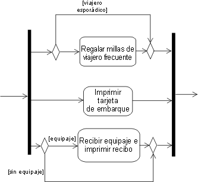

| Diferencias entre UML 1.x y UML 2.0 |
 |
|
Temas
Visión generalEn esta página se describen algunas diferencias entre UML 1.x y UML 2.0 que son relevantes al contexto de RUP. El objetivo no es abarcar todas las especificaciones de infraestructura y superestructura de UML ([UML04]), sino ofrecer una visión general de las funciones relevantes de UML. Para obtener más información, consulte RUM05] y [ERI04]. "UML 1.x" hace referencia a las versiones UML 1.0 a UML 1.5. Los cambios en cuanto a diagramas más significativos en el conjunto de características de UML 2.0 afectan a los diagramas de comportamiento, sobre todo al diagrama de actividad y al conjunto de diagramas de interacción (consulte las secciones Diagrama de actividad, Diagrama de secuencia y Diagrama de comunicación más abajo). El diagrama de estructura compuesta y la clase estructurada son también características nuevas de UML 2.0 (consulte la sección Diagrama de estructura compuesta más abajo). Diagrama de actividadIntroducciónEn UML 2.0, el modelado de actividades ha sufrido una profunda revisión. Es justo decir que, en caso de uso eventual al menos, el efecto y la apariencia pueden ser muy similares, aunque en función de la formalidad del modelado en UML 1.5 (y versiones anteriores), es posible que el resultado de la ejecución y la interpretación estricta de un modelo construido de acuerdo con reglas de UML 1.x no sea el mismo en UML 2.0. Por lo tanto, el modelador debe ser cauto: aunque un modelo de actividad de UML 1.x parezca aceptable para UML 2.0 sin cambio alguno, puede que no se ejecute de la misma manera, particularmente en el caso de modelos más complejos con concurrencia. Consulte [UML04] para obtener más información. De acuerdo con la definición de [UML04], una actividad (que se mostrará en un diagrama de actividad) es la especificación del comportamiento como secuencia coordinada de unidades subordinadas cuyos elementos individuales son acciones. De manera informal, puede que nos hayamos referido a los pasos ejecutables individuales de un diagrama de actividad UML 1.x como actividades o estados de la actividad o, correctamente, como estados de la acción: ahora en una actividad UML 2.0, estos pasos se llaman acciones, y éstas no se descomponen en más partes dentro de la actividad. La connotación de estado ha desaparecido en UML 2.0 porque una actividad ya no es una máquina de estado, como lo era en UML 1.x. En UML 2.0, las actividades se componen de nodos, de los cuales, las acciones son un tipo; otro tipo (descritos más abajo) son los nodos de control y los nodos de objeto. Semántica de flujo Las actividades tienen ahora semántica del tipo Petri Net, basada en flujo de señales donde la ejecución de un nodo afecta a la ejecución de otro a través de conexiones dirigidas llamadas flujos. Las señales, que contienen objetos o una posición de control, fluyen entre nodos a través de estas conexiones. Un nodo puede empezar la ejecución cuando se reúnen condiciones especificadas en las señales de entrada, y cuando el nodo completa la ejecución, ofrece señales en sus flujos de salida, de modo que los nodos en sentido descendente pueden iniciar la ejecución. Los flujos que conectan los nodos se perfeccionan y se convierten en flujos de objetos o de datos y control, y como cabría esperar, las señales de control se mueven por los flujos de control, y las señales de datos u objetos pasan a través de los flujos de objetos. Esto contrasta con UML 1.x, en donde los nodos eran estados (o pseudoestados) con transiciones entre ellos, lo cual limitaba el modelado de los flujos. Modelado de concurrencia La función de modelado de UML 2.0 permite un paralelismo sin restricciones: mientras que en UML 1.x, toda la máquina de estado (actividad) realizaba un paso de ejecución hasta el final, la función de UML 2.0, en su formato más completo, permite que varias invocaciones de una actividad sean gestionadas por una única ejecución con varias corrientes de datos de señales que se mueven por los nodos y conectores de flujo de la actividad. Es responsabilidad del modelador ser consciente de las condiciones de actualización y las interacciones. Consulte también la sección Diferencias de semántica que aparece más abajo para ver otro ejemplo del efecto sobre el modelado de concurrencia de la semántica de flujo de señales. NotaciónNodos de control y acción El diagrama mostrado más abajo ilustra muchos de los elementos de UML 2.0, y se presenta con la forma habitual para UML 2.0: un marco rectangular y un nombre en un compartimiento en la parte superior izquierda. Compare este diagrama con la versión UML 1.x que se muestra después de este primer diagrama. Son similares en apariencia (difieren en las convenciones de color y orientación, pero éstas no tienen significado semántico), y este modelo tiene el mismo resultado de ejecución en UML 1.x y UML 2.0. Observe que los nodos de control (decisión, fusión, bifurcación, unión, inicial y final) se parecen a sus equivalentes en UML 1.x, y los flujos de control se muestran con una línea con flechas, que en UML 1.x equivale a la flecha de transición.
Ejemplo de diagrama de actividad de UML 2.0
Ejemplo de diagrama de actividad de UML 1.x UML 2.0 tiene un tipo de nodo de control adicional llamado Final de flujo (que se muestra más abajo en un diagrama de [UML04]) que se utiliza como alternativa al nodo Final de la actividad para terminar un flujo. Es necesario porque, en UML 2.0, cuando el control alcanza cualquier instancia del nodo Final de actividad, termina toda la actividad (incluidos todos los flujos). Final de flujo termina el flujo al que está asociado. Esto no era un problema en UML 1.5 debido a la semántica de ejecución hasta el final, pero con el paralelismo sin restricciones de UML 2.0, es posible que desee que no se detengan todos los flujos ni que se destruyan todas las señales.
Nodo de control de final de flujo Nodos de objetos El modelado de la actividad en UML 2.0 también admite nodos de objetos. Un nodo de objeto es un nodo de actividad que indica que una instancia de un clasificador determinado, posiblemente en un estado particular, podría estar disponible en un punto determinado de la actividad (por ejemplo, como salida de una acción o como entrada en una acción). Los nodos de objetos actúan como contenedores a los que objetos de un tipo determinado (y posiblemente de un determinado estado) pueden fluir y desde los que pueden fluir. Se ha introducido una nueva notación, llamada pin, para nodos de objeto en UML 2.0. Los pins representan entradas a una acción o salidas de una acción y son como pequeños rectángulos que aparecen junto a los rectángulos de la acción, como se muestra más abajo.
Notación pin Las flechas representan flujos de objetos. Son líneas continuas, a diferencia de las líneas de puntos que se usan en las transiciones a los estados de flujos de objetos y desde éstos en UML 1.x. Cuando el pin de salida en una acción tiene el mismo nombre que el pin de entrada en la acción conectada, los pins de salida y entrada pueden fusionarse en un solo pin autónomo. De nuevo su apariencia es similar al flujo de objetos en UML 1.x.
Notación de pin autónomo Nodos de actividad estructurada Un nodo de actividad estructurada es un nodo de actividad ejecutable que puede ampliarse a nodos de actividades subordinadas. Los nodos subordinados pertenecen a un solo nodo de actividad estructurada, pero puede que estén anidados. Pueden tener flujos de control conectados a ellos y pins adjuntos. Un nodo de actividad estructurada se dibuja en forma de rectángulo de esquinas redondeadas y de puntos que encierra sus nodos y flujos, con la palabra clave <<estructurada>> en la parte superior. Particiones de actividades Una partición de actividad es una forma de agrupar los nodos y los flujos de una actividad de acuerdo con alguna característica compartida. En UML 1.x, la idea de divisiones (vistas como particiones) se utilizaba en diagramas de actividad para agrupar acciones de acuerdo con algún criterio, por ejemplo en modelado empresarial, según la empresa responsable. En UML 2.0 la función de particiones se amplía a varias dimensiones para diagramas de actividad y proporciona una notación adicional de modo que, por ejemplo, a las acciones individuales se les puede asignar el nombre de la partición a la que pertenecen. El siguiente diagrama muestra un ejemplo de divisiones de varias dimensiones según aparecerían en UML 2.0, en donde las acciones se agrupan de acuerdo con la ubicación y la responsabilidad.
Ejemplo de particiones de actividad con divisiones de dos dimensiones Diferencias de semántica La semántica de flujo de señales y el paralelismo sin restricciones de los modelos de actividad de UML 2.0 requieren del modelador un especial cuidado a la hora de construir los nuevos modelos o convertir los modelos existentes, a fin de garantizar el resultado de ejecución pretendido. Así en el ejemplo processPassenger anterior, el pasajero que está facturando puede que sea miembro de un programa de pasajeros frecuentes, en cuyo caso, el agente le deberá obsequiar con millas de regalo, como se muestra en el siguiente fragmento de modelo de UML 1.x.
Utilización de transiciones concurrentes vigiladas Colocar la vigilancia en la transición concurrente opcional significa que, en UML 1.x, la transición nunca se inicia, y el comportamiento es como si la transición no se mostrara en el modelo; en esa línea, cuando las otras dos transiciones se completan, la ejecución continúa hasta después de la unión. En UML 2.0, si el pasajero no es un pasajero habitual, no llegará ninguna señal a la unión a través del flujo y el modelo se detiene porque la unión espera señales en todos sus flujos para continuar. El modelo debe construirse como se muestra a continuación, con la condición tratada de la misma manera que el flujo de gestión del equipaje. Está permitido colocar guardias directamente en los flujos concurrentes siempre que esté seguro de que no haya uniones en sentido descendente que dependan de ellos.  Utilización de nodos de decisión y de fusión en lugar del flujo concurrente vigilado Diagrama de comunicaciónEl diagrama de colaboración de UML 1.x se llama ahora en UML 2.0 diagrama de comunicación. No existen diferencias semánticas con las versiones anteriores. El diagrama de comunicación se basa en el diagrama de colaboración anterior y sigue siendo un tipo de diagrama de interacción. NotaciónUn diagrama de comunicación se centra en la interacción entre las líneas de vida. Se muestra como un gráfico cuyos nodos son rectángulos que representan partes de un clase estructurada o roles de una colaboración. Se utiliza un marco rectangular que rodea al diagrama con un nombre en un compartimiento en la esquina superior derecha, que es un cambio de notación de las versiones UML anteriores.
Ejemplo de un diagrama de comunicación:
Ejemplo de un diagrama de comunicación de un sistema de pedidos. ComponenteEn UML 2.0, un componente se anota mediante un símbolo de clase sin los dos rectángulos sobresalientes, como se definía en UML 1.4. En su lugar, se utiliza un estereotipo de <<componente>>. De forma opcional, todavía se puede utilizar un icono de componente similar al icono de UML 1.4 en la esquina superior derecha del símbolo del componente. En UML 2.0, un componente es una clase estructurada, lo que significa que la colaboración entre los elementos y su estructura interna (sus partes) puede modelarse para describir mejor su comportamiento. Las partes están conectadas a través de conectores. Puede utilizar puertos para aumentar el nivel de encapsulación de un componente a través de las interfaces proporcionadas y necesarias. Consulte Concepto: Componente y Concepto: Clase estructurada para obtener más información. Las versiones anteriores de UML definían un elemento de modelado especial llamado subsistema, que se modelaba como un paquete con interfaz. Además, los componentes se utilizaban para estructurar el modelo en la arquitectura física. En UML 2.0, los componentes se utilizan en un sentido amplio de la palabra, en todas las partes del modelo. Por lo tanto, ya no es necesario un elemento especial para modelar subsistemas. Los compartimientos independientes de realización del subsistema y especificación del subsistema en UML 1.x se han convertido en estereotipos independientes (<<realización>> y <<especificación>>, respectivamente) aplicados a componentes en UML 2.0. Otro nuevo estereotipo de componente es <<subsistema>>, indicado para modelar componentes a gran escala. RUP recomienda el uso de componentes para modelar subsistemas (consulte Directriz: Subsistemas de diseño para obtener más información). Diagrama de estructura compuestaLas arquitecturas pueden tener colaboraciones específicas entre sus elementos, con partes y conectores que no se conocen necesariamente en el momento de su diseño. Un diagrama de clase típico (así como otros diagramas estáticos) no sería suficiente para representar claramente los roles, las responsabilidades, las relaciones y las reglas que se aplican a esos elementos. Para solucionar estos problemas, UML 2.0 ha añadido el diagrama de estructura compuesta. Representa la estructura interna de una clase estructurada (por ejemplo, un componente o una clase), incluidos los puntos de interacción de la clase estructurada con otras partes del sistema. Muestra la configuración de las partes que realizan conjuntamente el comportamiento de la clase estructurada que contiene. Los diagramas de estructura compuesta se utilizan para dibujar el contenido interno de las clases estructuradas (consulte Concepto: Clase estructurada para obtener detalles y ejemplos de diagramas de estructura compuesta). Diagrama de secuenciaLas nuevas características de los diagramas de secuencia de UML 2.0 son:
Con las nuevas funciones de representación de fragmentos, apariciones de interacciones y bucles, los diagramas de secuencia se pueden utilizar de dos maneras:
La figura siguiente muestra un ejemplo del modelado de diferentes casos de ejemplo en un diagrama de secuencia. El fragmento alt muestra dos alternativas posibles de secuencias de mensaje en función de si se ha cumplido o no una condición:
Ejemplo: diagrama de secuencia con ramificaciones, bucles y condiciones |
© Copyright IBM Corp. 1987, 2006. Reservados todos los derechos. |